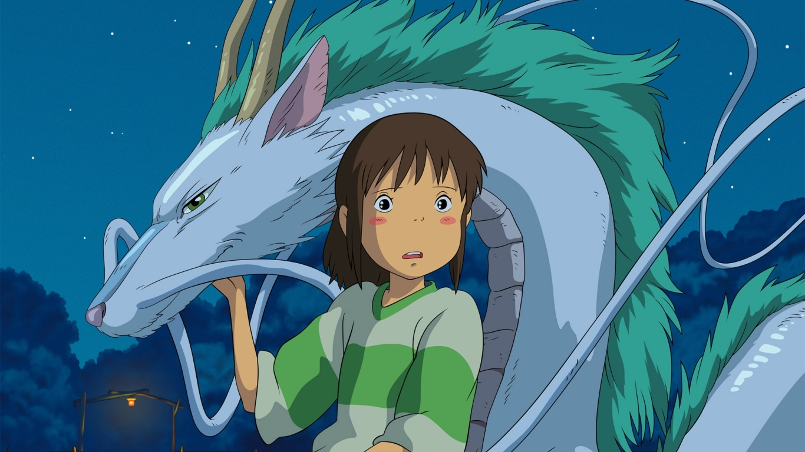
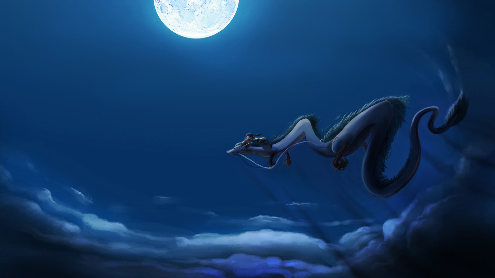
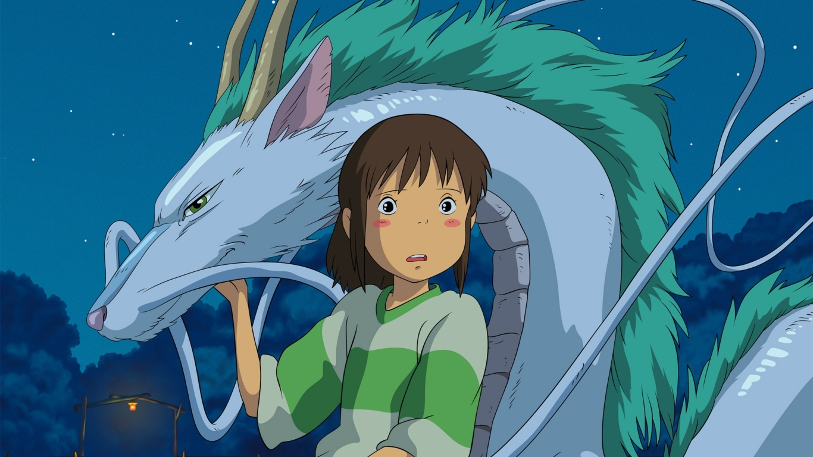
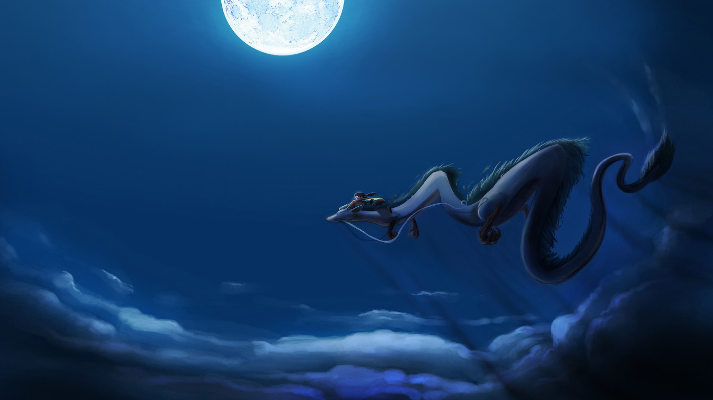

2001 · PG · Movie · Fantasy · Adventure · Drama · Supernatural · Oscar Winner · IMBD : 8.6/10
tubborn, spoiled, and naïve, 10-year-old Chihiro Ogino is less than pleased when she and her parents discover an abandoned amusement park on the way to their new house. Cautiously venturing inside, she realizes that there is more to this place than meets the eye, as strange things begin to happen once dusk falls. Ghostly apparitions and food that turns her parents into pigs are just the start—Chihiro has unwittingly crossed over into the spirit world. Now trapped, she must summon the courage to live and work amongst spirits, with the help of the enigmatic Haku and the cast of unique characters she meets along the way. Vivid and intriguing, Sen to Chihiro no Kamikakushi tells the story of Chihiro's journey through an unfamiliar world as she strives to save her parents and return home.
SCREENSHOTS
 



ADDITION INFORMATIOM
Quality: 1080P
Size: 1.70 GB
Duration: 2:04:44